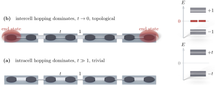

Advanced Quantum Materials 2027 · All lectures · Lecture notes
Session 3. Topological Band Structure Theory
3.9b The SSH chain in the opposite limit and the zero modes
In the first limit the strong bonds are the intracell ones. Now let us take the opposite limit, \(t \to 0\), in which the strong bonds are the intercell ones and the dimer pattern is shifted by one site. We leave the first site uncoupled, so that it is a dangling site, we couple \((1,2)\), \((3,4)\), …, and we also leave the last site dangling. In the bulk this looks the same as the previous chain, since it has the same alternating dimer pattern shifted by one site, but the two ends are qualitatively different, because each end now has a site that is not coupled at all. When we diagonalize this chain, we obtain the same bonding and antibonding pairs at \(\pm 1\) in the bulk, and also two states pinned exactly at zero energy, one localized at each end. Figure 3.3 shows the two chains side by side together with their spectra.

In the limit \(t\to 0\) a chain of eight sites has the dimers \((1,2)\), \((3,4)\) and \((5,6)\), counting the sites from \(0\) to \(7\). How many states are at exactly zero energy?
Show the answers
- A. ✗ False
This is false. The sites \(3\) and \(4\) form a dimer with the levels \(\pm 1\). Also, the levels of this chain come in pairs \(\pm E\), so the number of zero levels of eight states must be even and cannot be one.
- B. ✗ False
This is false. The sites \(0\) and \(7\) are not bound. The Hamiltonian applied to the state on site \(0\) gives zero, so this site is a level at zero energy.
- C. ✓ True
This is true. The sites \(0\) and \(7\) are not coupled to anything, so each one is an isolated level at zero energy. The three dimers give the levels at \(\pm 1\).
This is the minimal example of a topological phase. The fully dimerized chain of the first case is the trivial phase, which is gapped everywhere, including at the ends. The shifted chain of the second case is the topological phase, which is gapped in the bulk but has gapless modes at exactly zero energy at the edges. This construction looks very fine-tuned, and it is, since real chains have hopping between every pair of neighboring sites. The important part is what survives when we remove the fine-tuning. If we turn on a small coupling \(t\) between the sites at the two ends that were decoupled, the zero modes are not removed, as long as \(t\) stays below the bulk hopping strength. Intuitively, for \(t \ll 1\) we weakly couple an isolated zero-energy level to a gapped bulk, and a weak coupling cannot push a level all the way across a finite gap. In a more exact way, this is the deformation argument of Section 3.7. The Hamiltonians at different small \(t\) are topologically equivalent, since they are connected without closing the bulk gap, so the invariant that protects the zero mode at \(t=0\) also protects it when the coupling is finite.
For \(t=1/4\) and eight sites the two end states sit at \(\pm 0.004\). What is the splitting for sixteen sites?
Show the answers
- A. ✗ False
This is false. The exact numbers for \(t=1/4\) are \(\pm0.059\) for four sites, \(\pm0.0037\) for eight sites and \(\pm0.00023\) for twelve sites. The energy changes with the length.
- B. ✗ False
This is false. Going from four to eight sites the energy drops from \(0.059\) to \(0.0037\), a factor \(16\) and not two. Each added unit cell of two sites gives a factor \(t=1/4\), and the four added sites give \(t^2=1/16\).
- C. ✓ True
This is true. Each end state decays by a factor \(t\) every two sites. The overlap between the two ends then scales as \(t^{N/2}\), which is \(4^{-8}\approx 1.5\times 10^{-5}\) for sixteen sites.